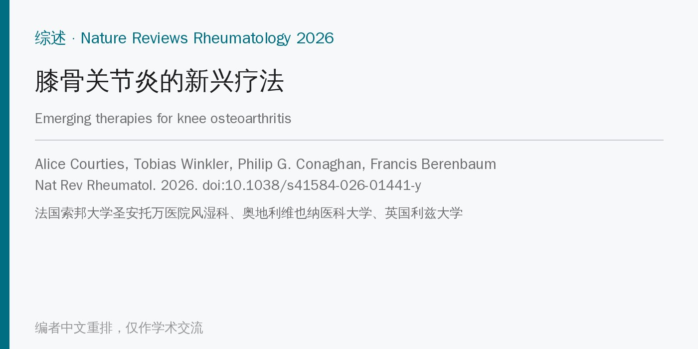
🔖原文信息（编者中文重排）
📚 文献信息
▪ Courties A, Winkler T, Conaghan PG, Berenbaum F. Emerging therapies for knee osteoarthritis. Nat Rev Rheumatol. 2026. doi:10.1038/s41584-026-01441-y
▪ 中文题目：膝骨关节炎的新兴疗法
▪ 作者来自法国索邦大学圣安托万医院风湿科、奥地利维也纳医科大学骨科与创伤外科、英国利兹大学；通讯作者 Alice Courties
▪ 文章类型：叙述性综述（Review article）。本文依据的是在线预发表版本，卷期和页码尚未确定
• 膝关节是骨关节炎（OA）最常见的部位。按预测，到 2050 年全球约 6.42 亿人患膝骨关节炎；一半以上在 55 岁前发病
• 它不只是关节的问题：膝骨关节炎患者全因死亡风险高 20%～50%，主要来自心血管疾病
• 现有治疗（教育、运动、减重，加上对乙酰氨基酚、NSAIDs、关节腔注射激素或玻璃酸钠，部分指南包括弱阿片类）只能带来小幅、短暂的缓解，不改变结构进展；膝关节置换后仍有约 20% 的人持续疼痛
• 难点在于：OA 是一种全关节疾病，涉及力学、代谢、炎症、骨软骨和神经血管多种机制；影像上的严重程度和疼痛只弱相关，结构改善也不一定换来症状改善
• 监管上，FDA 把有意义的获益分成三方面：患者感觉如何（症状）、功能如何、关节能否“存活”（推迟置换），推动研发从单纯止痛转向病情修饰药物（DMOAD）
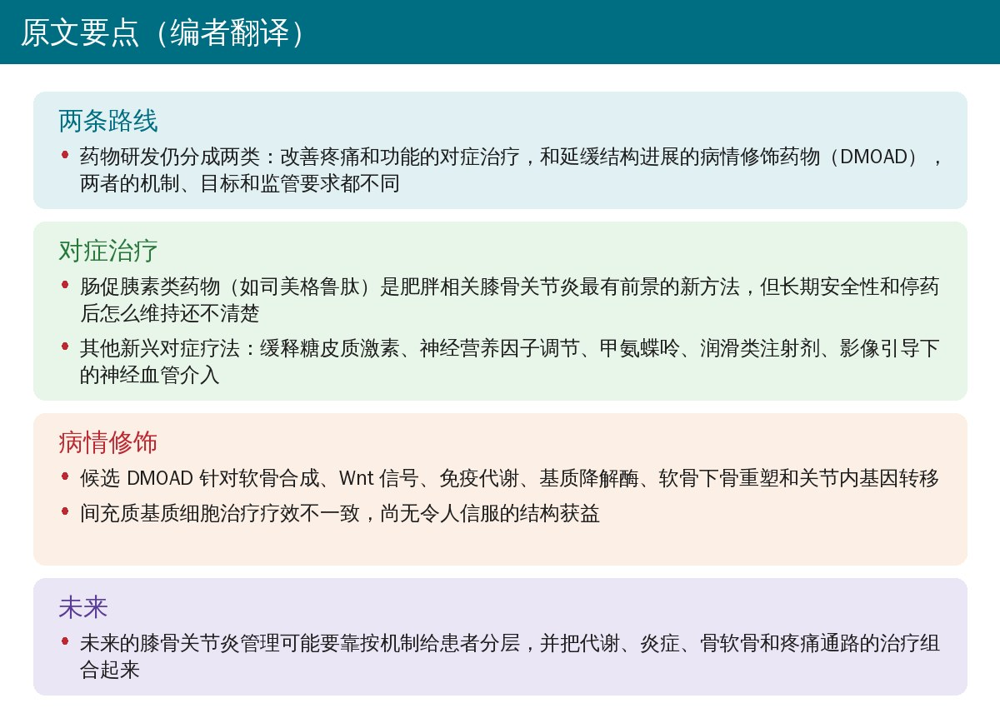
🔖原文要点（编者翻译）
• 文章类型：叙述性综述，没有系统检索和质量评价
• 纳入范围：主要是近 5 年发表、经同行评议的 II～III 期随机对照试验；为了完整，也收录了只有会议摘要、ClinicalTrials.gov 记录或公司通报的在研疗法，并标注证据级别
• 覆盖内容：药物、细胞和基因治疗、部分影像引导下的介入；不包括针对局灶性软骨缺损的治疗
• 分类：对症治疗（改善疼痛和功能）和潜在病情修饰药物（延缓结构进展或推迟关节置换）两大类，汇总在原文表 1
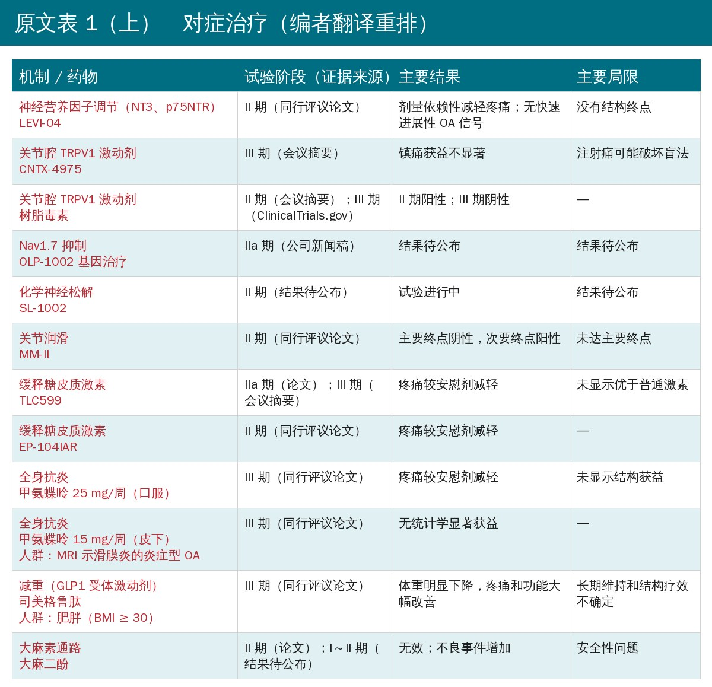
🔖原文表 1 上半部分（编者翻译重排）
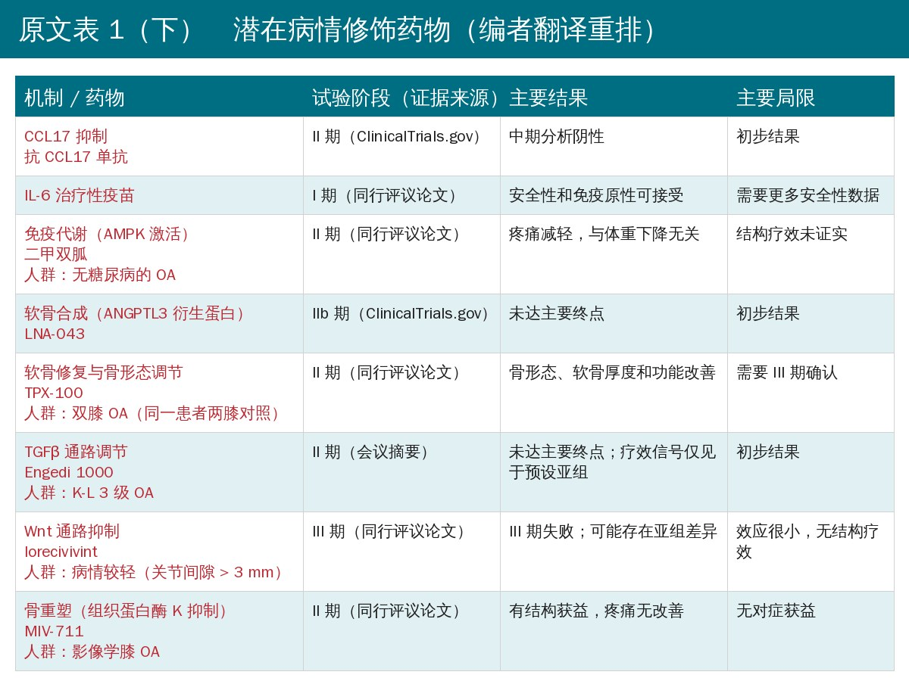
🔖原文表 1 下半部分（编者翻译重排）
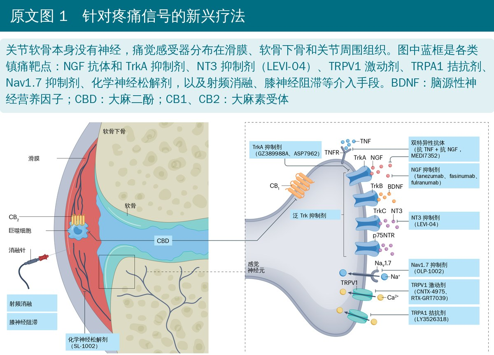
🔖原文图 1（编者把图中英文译成中文，药物代号保留）
• 神经营养因子：抗 NGF 单抗（tanezumab、fasinumab、fulranumab）镇痛明显，但会剂量依赖性地增加快速进展性 OA 等关节不良事件；TNF/NGF 双抗 MEDI7352 未达主要终点，TrkA 抑制剂效果有限
• LEVI-04（可溶性 p75NTR 融合蛋白，主要结合 NT3）：II 期 518 人，第 17 周 WOMAC 疼痛较安慰剂改善 0.51～0.79（标准化效应量 0.28～0.43），20 周内未见快速进展性 OA；MRI 探索性分析显示骨髓水肿样病变减少。仍需 III 期和更长随访
• 离子通道：全身 TRPV1 拮抗剂因体温升高等问题失败；关节腔 TRPV1 激动剂 CNTX-4975 II 期有效，两项 III 期均未达主要终点（合并分析 12 周有小幅效应）；树脂毒素 III 期初步结果也未达标。TRPA1 拮抗剂 LY3526318 II 期无效；Nav1.7 反义寡核苷酸 OLP-1002 仍在早期
• 其他：化学神经松解剂 SL-1002 已进入 III 期，但 II 期数据和作用机制都未公开；口服大麻二酚 600 mg/天 8 周不比安慰剂好，肝酶升高等不良事件更多
• 玻璃酸钠只有小幅症状获益，没有确切的组织修复证据
• 磷脂脂质体 MM-II：IIb 期 396 人，12 周 WOMAC 疼痛差 0.24 分，未达主要终点（P = 0.085）；次要终点到 26 周有改善，耐受良好
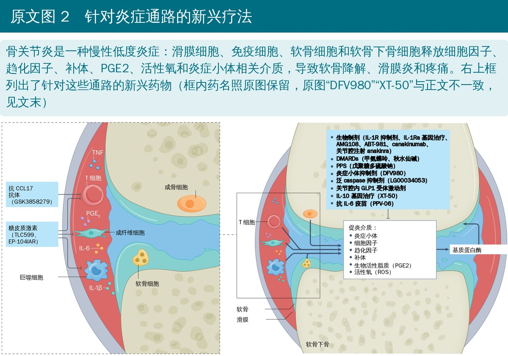
🔖原文图 2（编者把图中英文译成中文，药物代号保留）
• 缓释关节腔激素：FX006（曲安奈德微球）3 个月镇痛优于安慰剂；脂质体地塞米松 TLC599、氟替卡松微球 EP-104IAR 有中等镇痛效果。缓释剂型会不会加重反复注射激素对软骨的潜在损害，目前不清楚
• 甲氨蝶呤：PROMOTE 试验口服逐渐加到 25 mg/周，6 个月疼痛差 0.79 分（0～10 分，效应量 0.34），12 个月未维持；另一项针对 MRI 示滑膜炎患者、加到 15 mg/周的试验 52 周无效。事后分析提示 hsCRP 高的人可能更获益，需前瞻验证
• STEP 9 试验：司美格鲁肽 2.4 mg 每周皮下注射 68 周，407 人，体重下降 13.7%（安慰剂 3.2%），约 70% 减重 ≥ 10%；WOMAC 疼痛组间差 14.1 分，功能也明显改善
• GLP1 信号可能有不依赖减重的关节作用，但能否修饰病情尚无定论；替尔泊肽 III 期、置换术前使用 GLP1 受体激动剂、三重激动剂瑞他鲁肽都在研究中
• 隐忧：停药后体重常反弹，真实世界约 30%～50% 的人一年内停药（胃肠反应、费用、效果不满意等）；快速减重可能导致肌少性肥胖，老年人尤其要同时做抗阻训练、保证蛋白质摄入
• 膝神经阻滞只有一项安慰剂对照试验（59 人），4 周时疼痛小幅下降，之后不持续
• 射频消融：25 项随机试验（2049 人）的荟萃分析显示较假手术仅有短期小幅镇痛，24 周后没有持续获益，功能不改善，证据确定性低到极低；冷冻神经松解只有一项假手术对照试验
• 膝动脉栓塞：开放研究报告 6～12 个月有效率 70%～90%，但少数假手术对照试验结果互相矛盾
• 作者结论：这些侵入性介入暂不支持在研究之外广泛使用，需要更大、设计更严格的假手术对照试验
• 抗 CCL17 单抗 GSK3858279：II 期 314 人，预设中期分析因无效终止
• IL-6 疫苗 PPV-06：I 期 24 人安全、能诱导中和抗体；II 期在炎症型膝 OA 中进行
• IL-1 通路：多项针对 OA 的随机试验都失败了；但心血管试验的事后分析发现，canakinumab 使膝髋置换减少约 40%（CANTOS），低剂量秋水仙碱使关节置换减少约 30%（LoDoCo2）——只能算假设
• NLRP3 炎症小体抑制剂 DFV890：II 期初步结果未达主要终点；戊聚糖多硫酸钠的 II～III 期（含合并血脂异常的 MaRVeL 试验）进行中；超声引导下髌下脂肪垫注射激素未改善主要终点
• 二甲双胍：107 名无糖尿病的膝 OA 患者，2000 mg/天 6 个月，疼痛较安慰剂差 11.4 mm（P = 0.01），镇痛与体重变化无关；腹泻（15% 对 8%）等胃肠反应更多。2026 年的系统综述证据确定性低；英国生物银行观察数据提示置换风险较低，但不能证明病情修饰
• 关节腔注射 GLP1 受体激动剂（如利拉鲁肽）：I 期安全性良好，II 期进行中，疗效未知
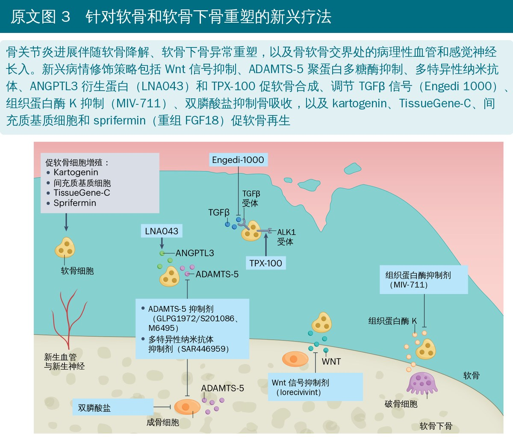
🔖原文图 3（编者把图中英文译成中文，药物代号保留）
• 抗分解：ADAMTS-5 抑制剂 GLPG1972/S201086 和纳米抗体 M6495 在 II 期都没有结构疗效；广谱蛋白酶抑制剂 CYT-108、多靶点纳米抗体 SAR446959 还在 I 期
• 促合成：LNA043 IIb 期未达主要终点；Engedi 1000 II 期（357 人）未达主要终点，只在病情较重的预设亚组有信号
• TPX-100：II 期采用同一患者一膝用药、对侧膝安慰剂的设计，6、12 个月股骨骨形态进展变慢，软骨厚度和功能有改善，III 期进行中
• lorecivivint（关节腔 Wnt 通路抑制剂）：II 期（455 人、700 人）部分剂量有小幅镇痛，没有结构效应；两项 III 期（各约 500 人）疼痛、功能、结构全部阴性。事后分析显示 III 期患者结构病变更重，有效者集中在内侧关节间隙 > 3 mm 的人，提示可能只有一个“治疗窗口”
• 唑来膦酸：早期小试验阳性，两项较大的随机试验都没能重复
• MIV-711（组织蛋白酶 K 抑制剂）：II 期 244 人，26 周疼痛不改善，但软骨下骨形态进展和软骨变薄都减慢，安全性与安慰剂相当——典型的“结构改善、症状不改善”
• 白藜芦醇、清除衰老细胞的 UBX0101、非瑟酮都没有显示临床获益
• 富血小板血浆：2021 年 RESTORE 试验（288 人）3 次注射后，12 个月疼痛差仅 0.4 分（P = 0.17），内侧胫骨软骨体积丢失也无差异；与早期小试验和荟萃分析不一致，可能和制备方法不统一、人群差异有关。自体蛋白溶液也未达主要终点
• 间充质基质细胞：25 项随机试验（1341 人）的系统综述显示 6 个月疼痛改善 1.2 分（0～10 分），但证据确定性低；III 期试验和 ADIPOA-2 都没能优于激素或安慰剂；单次注射自体脂肪微碎片 24 个月不优于生理盐水。没有可靠证据支持结构修复
• TissueGene-C（表达 TGFβ1 的细胞基因治疗）：163 人的试验 52 周疼痛和功能改善，无结构获益；2019 年被发现基因修饰成分来自 HEK-293 细胞而非申报的软骨细胞，2020 年 FDA 解除临床暂停，美国两项 III 期已恢复
• IL-10 基因治疗 XT-150 单次注射 180 天无效；IL-1Ra 基因治疗 PCRX-201、GNSC-001 有持续表达和初步改善，但主要是开放或早期研究；OLP-1002 的数据只见于公司新闻稿
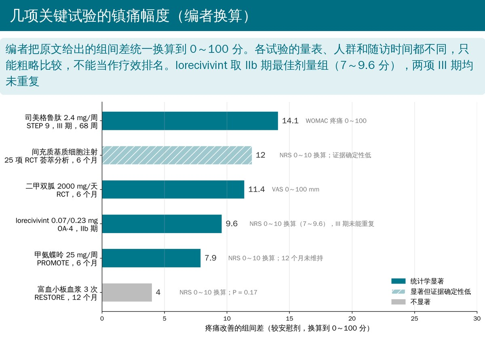
🔖编者根据原文数字换算
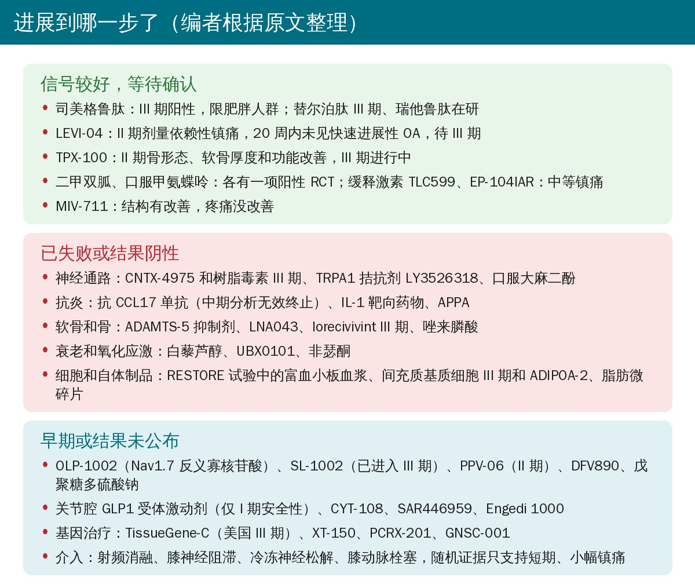
🔖编者根据原文整理
• 过去 5 年，膝骨关节炎的治疗图景已经扩展到神经、炎症、代谢、神经血管等多种机制，但真正同时证明结构和临床疗效的候选药物还很少
• 反复失败可能不只是药不行，也因为把机制不同的患者混在一起入组，稀释了疗效；加上病程慢、影像终点不敏感、安慰剂反应高、炎症型 OA 没有统一定义
• 未来方向：按机制分层（肥胖代谢型、炎症型、骨病变为主、疼痛主导型，乃至绝经相关），借助 MRI、生物标志物、组学和人工智能挑选人群；采用适应性设计、平台试验、贝叶斯方法；寻找能预测长期结局的替代终点
• 治疗视野要从软骨、滑膜、软骨下骨扩展到髌下脂肪垫、半月板、韧带、关节周围肌肉乃至淋巴系统，并结合全身代谢和衰老
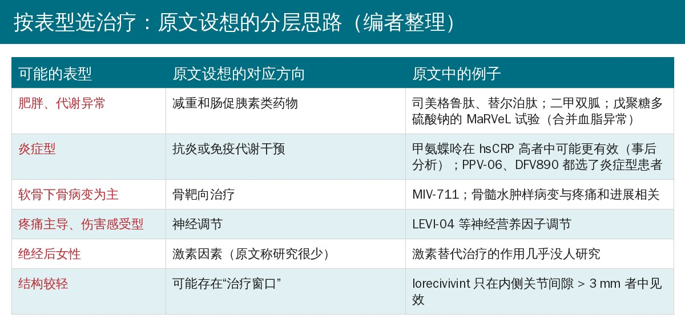
🔖编者根据原文“未来方向”整理
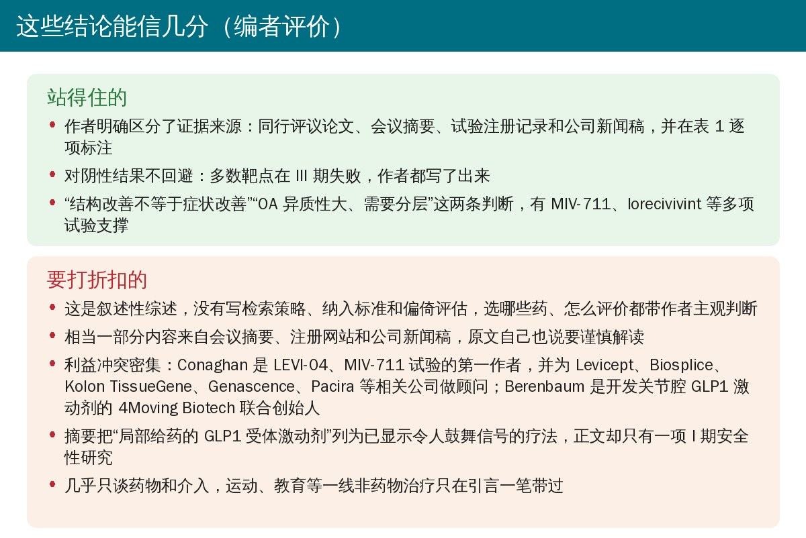
🔖编者评价
• 叙述性综述：没有交代检索策略、纳入排除标准和偏倚评估，选哪些疗法、给多大篇幅都带作者判断
• 不少数据未经同行评议：CNTX-4975 和树脂毒素 III 期、LNA043、Engedi 1000、DFV890、XT-150、PCRX-201、GNSC-001、OLP-1002 等主要来自会议摘要、注册网站或新闻稿，作者自己也提醒要谨慎
• 利益冲突较多：4 位作者都与多家药企有顾问或资助关系。Conaghan 是 LEVI-04 和 MIV-711 试验论文的第一作者，并为 Levicept、Biosplice、Kolon TissueGene、Genascence、Pacira 等相关公司做顾问；Berenbaum 是正在开发关节腔 GLP1 激动剂的 4Moving Biotech 联合创始人
• 摘要的措辞比正文乐观：摘要把局部给药的 GLP1 受体激动剂和关节腔 IL-1Ra 基因治疗列为“已显示令人鼓舞信号”，正文里前者只有 I 期安全性数据，后者主要是开放研究和会议摘要
• 跨试验比较要小心：量表、人群（如 STEP 9 只纳入 BMI ≥ 30 的人）、给药方式和随访时间都不同，不能直接比谁更有效
• 康复视角缺位：运动、教育等一线治疗只在引言提了一句，各新疗法和运动治疗如何配合基本没有讨论
• 药名笔误（图 2）：图 2 写“炎症小体抑制剂（DFV980）”，正文写 DFV890；图 2 和图注都写“IL-10 基因治疗（XT-50）”，正文写 XT-150。正文的写法与所引文献一致
• TissueGene-C 的试验分期：正文称“一项 II 期试验（n = 163）”，所引文献 170 的标题却是 III 期临床试验；紧接着又拿它和“一项 II 期试验”的 MRI 结果对比，读起来像两项 II 期
• Engedi 1000 是不是基因治疗：图 3 图注称它是“TGFβ1 基因治疗”，正文描述它是结合 TGFβ1、选择性抑制 SMAD1/5/9 信号的候选药物，并未提到基因转移；名称也有 Engedi 1000、Engedi-1000、E1K（参考文献）三种写法
• 图注提到、图里没有：图 1 图注说介入手段包括膝动脉栓塞，图中没有；图 2 图注列了 NSAIDs 和二甲双胍，图中没有；图 3 图注提到白藜芦醇，图中也没有
• 图 1 图注重复：先说“另有方法针对 TRPA1（LY3526318）”，下一句又说“其他策略包括调节 TRPA1”；还提到“CB2 激动”，正文却没有讨论任何 CB2 激动剂
• 二甲双胍的入组人群：正文和表 1 只写“无糖尿病”，所引文献 113 的题目是“超重或肥胖患者”，漏掉了这一入选条件，而“镇痛与体重无关”的结论正是在超重/肥胖人群中得出的
• 表 1 把亚组写成入组条件：Engedi 1000 一行的“人群富集”写的是 K-L 3 级 OA，但正文说试验纳入的是 357 名膝 OA 患者，K-L 分级只是亚组分析；正文称“预设亚组”，所引会议摘要的题目却是“事后分析”；MIV-711 一行的“影像学膝 OA”也算不上富集
• 名称写法不统一：LNA-043 与 LNA043 混用；“remodelling”和“remodeling”两种拼法并存
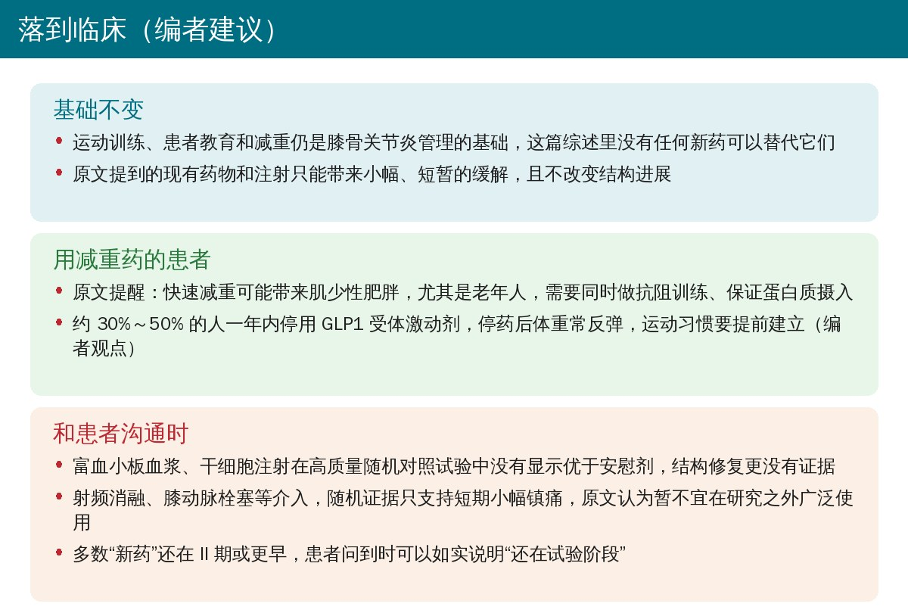
🔖编者建议
• 基础没变：运动训练、患者教育和减重仍是膝骨关节炎管理的核心，综述里的新药都还不能替代它们（编者观点）
• 配合减重药：对正在用 GLP1 类药物的患者，同步安排抗阻训练、关注蛋白质摄入，帮助减少肌肉流失；提前建立运动习惯，为停药后的体重维持做准备
• 解释注射治疗：富血小板血浆、干细胞注射在高质量随机对照试验中没有显示优于安慰剂，“软骨再生”更无证据，向患者说明时要实事求是
• 看待介入：射频消融、膝动脉栓塞等目前只有短期、小幅镇痛的随机证据，原文作者不主张在研究之外广泛使用
• 关注分层：肥胖代谢型、炎症型、疼痛主导型的思路对康复评估也有参考价值：同样是膝 OA，体重、炎症指标、疼痛特征不同，干预重点也不同（编者观点）
原文表 1 临床开发中的膝骨关节炎新兴疗法
| 机制 / 药物 | 阶段（证据来源） | 主要结果 | 主要局限 |
|---|---|---|---|
| 神经营养因子调节：LEVI-04 | II 期（论文） | 剂量依赖性减轻疼痛；无快速进展性 OA 信号 | 没有结构终点 |
| 关节腔 TRPV1 激动剂：CNTX-4975 | III 期（会议摘要） | 镇痛获益不显著 | 注射痛可能破坏盲法 |
| 关节腔 TRPV1 激动剂：树脂毒素 | II 期（会议摘要）；III 期（注册网站） | II 期阳性；III 期阴性 | — |
| Nav1.7 抑制：OLP-1002 | IIa 期（新闻稿） | 结果待公布 | 结果待公布 |
| 化学神经松解：SL-1002 | II 期（结果待公布） | 试验进行中 | 结果待公布 |
| 关节润滑：MM-II | II 期（论文） | 主要终点阴性，次要终点阳性 | 未达主要终点 |
| 缓释激素：TLC599 | IIa 期（论文）；III 期（会议摘要） | 疼痛较安慰剂减轻 | 未显示优于普通激素 |
| 缓释激素：EP-104IAR | II 期（论文） | 疼痛较安慰剂减轻 | — |
| 甲氨蝶呤 25 mg/周口服 | III 期（论文） | 疼痛较安慰剂减轻 | 未显示结构获益 |
| 甲氨蝶呤 15 mg/周皮下（MRI 滑膜炎） | III 期（论文） | 无统计学显著获益 | — |
| 司美格鲁肽（BMI ≥ 30） | III 期（论文） | 体重明显下降，疼痛和功能大幅改善 | 长期维持和结构疗效不确定 |
| 大麻二酚 | II 期（论文）；I～II 期（待公布） | 无效；不良事件增加 | 安全性问题 |
| 抗 CCL17 单抗 | II 期（注册网站） | 中期分析阴性 | 初步结果 |
| IL-6 疫苗 | I 期（论文） | 安全性和免疫原性可接受 | 需要更多安全性数据 |
| 二甲双胍（无糖尿病） | II 期（论文） | 疼痛减轻，与体重下降无关 | 结构疗效未证实 |
| LNA-043 | IIb 期（注册网站） | 未达主要终点 | 初步结果 |
| TPX-100（双膝 OA，同一患者对照） | II 期（论文） | 骨形态、软骨厚度和功能改善 | 需要 III 期确认 |
| Engedi 1000（K-L 3 级） | II 期（会议摘要） | 未达主要终点；信号仅见于预设亚组 | 初步结果 |
| lorecivivint（关节间隙 > 3 mm） | III 期（论文） | III 期失败；可能存在亚组差异 | 效应很小，无结构疗效 |
| MIV-711（影像学膝 OA） | II 期（论文） | 有结构获益，疼痛无改善 | 无对症获益 |
前 12 行为对症治疗，后 8 行为潜在病情修饰药物；括号内为原文标注的人群富集条件。“论文”指同行评议论文。编者翻译重排
欢迎关注骨科康复小黄公众号，获取更多物理治疗的专业知识！
📄参考文献：
Courties A, Winkler T, Conaghan PG, Berenbaum F. Emerging therapies for knee osteoarthritis. Nat Rev Rheumatol. 2026. doi:10.1038/s41584-026-01441-y
本文为中文解读，仅作学术交流：原文图 1～图 3 引自原文，图中英文由编者译为中文；表 1 由编者翻译重排；要点卡、镇痛幅度图、进展汇总、分层表和评价卡为编者根据原文整理。原文版权归 Springer Nature Limited 所有。